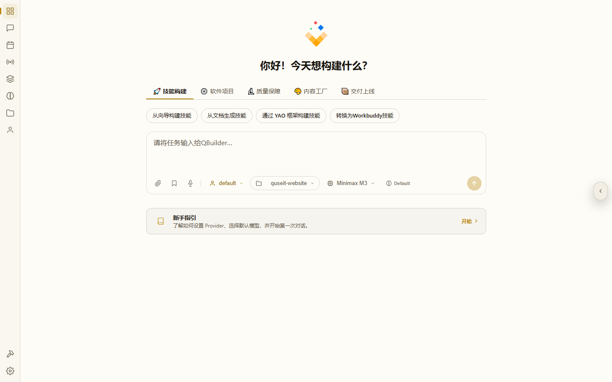
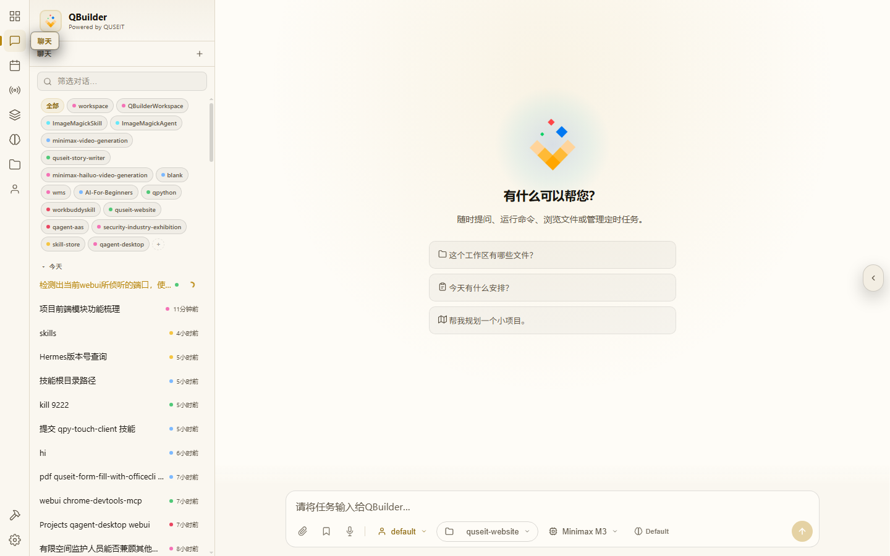
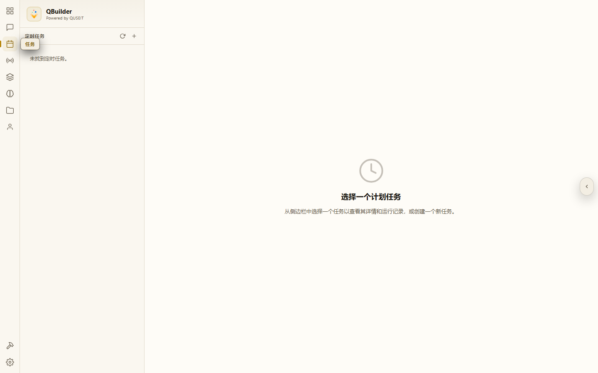
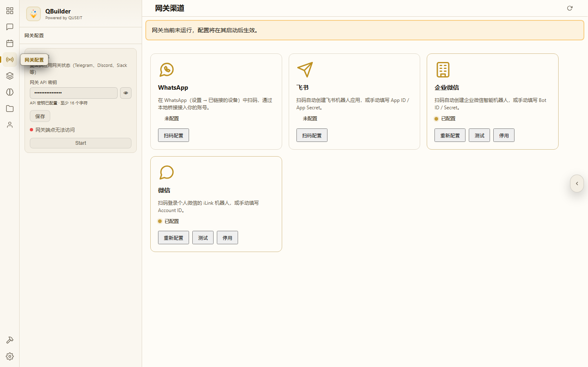
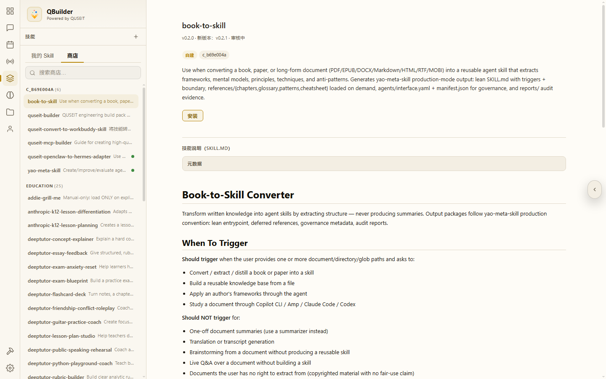
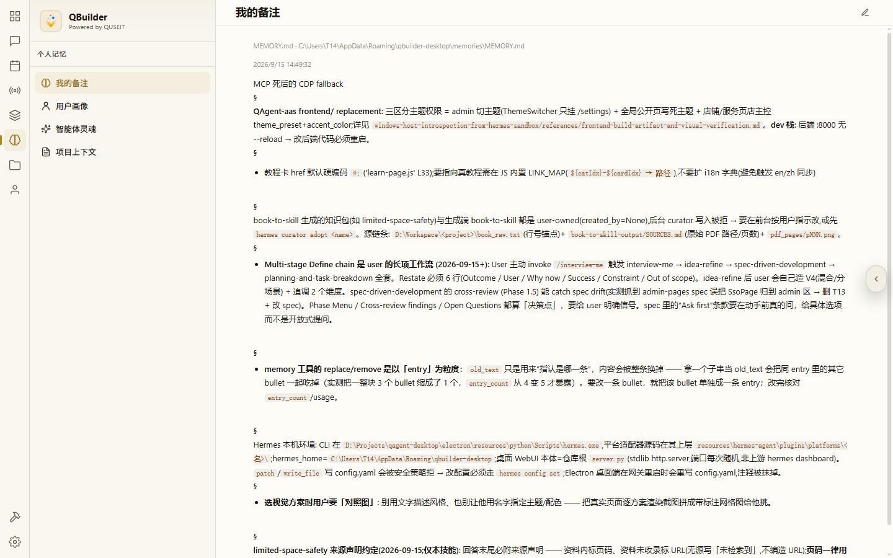
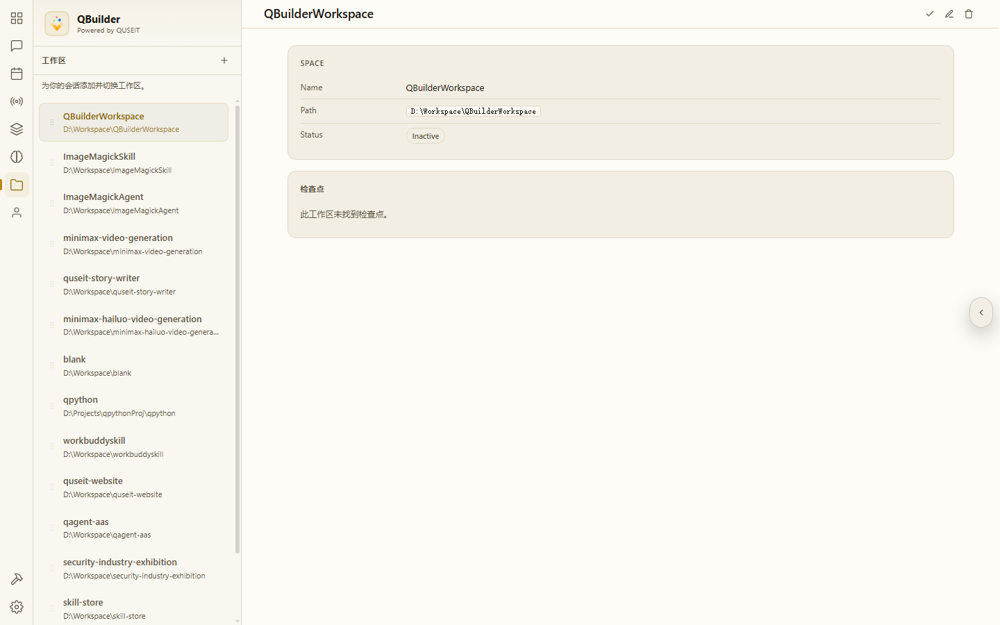
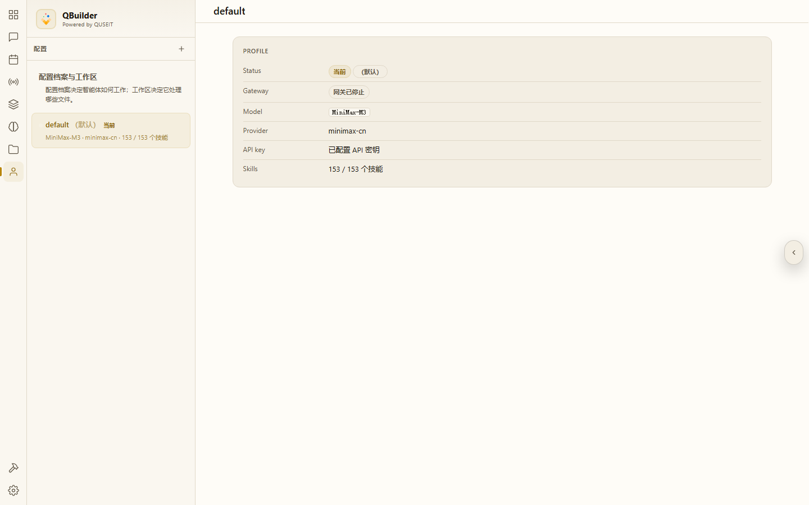
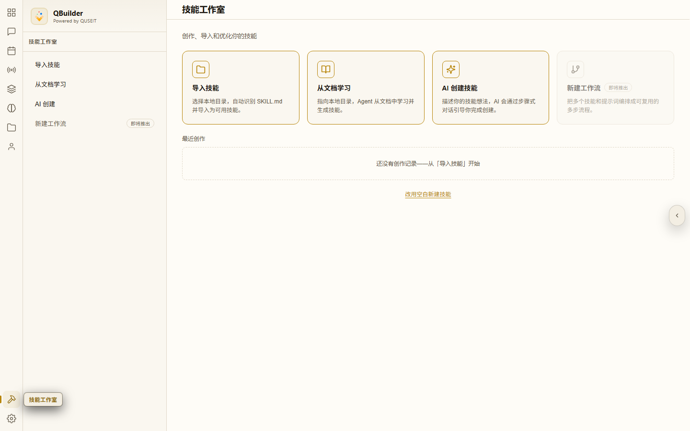
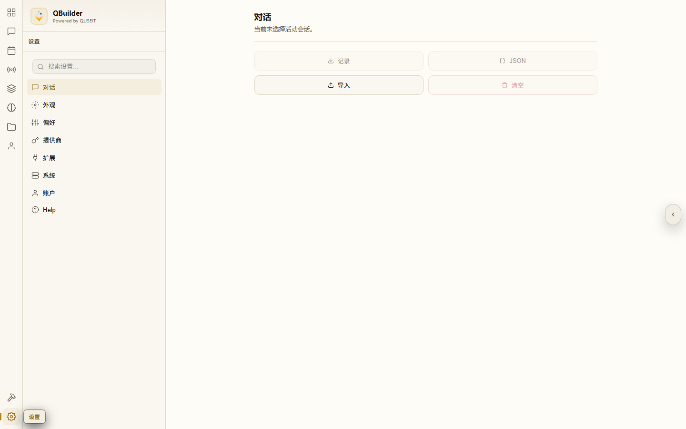

QBuilder Desktop 控制面板完全指南
本课面向普通用户,系统介绍 QBuilder Desktop 左侧导航的 10 个核心模块,涵盖 Dashboard、Chat、Tasks、Channels、Skills、Memory、Spaces、Agent profiles、Skill Studio、Settings 的功能、入口与典型用法。
模块总览
QBuilder Desktop 左侧导航栏共包含 10 个图标(8 个主视图 + 2 个工具入口)。下表先用一句话概括各模块功能,随后逐节展开。
| # | 图标位置 | 模块 | 一句话作用 | 常驻 |
|---|---|---|---|---|
| 1 | 左侧 | 仪表盘 (Dashboard) | 启动首页:5 类工作流入口卡 + 共享输入框 | 常驻 |
| 2 | 左侧 | 对话 (Chat) | 主对话区:消息流、附件、模型/工作区/推理控件 | 常驻 |
| 3 | 左侧 | 任务 (Tasks) | 定时任务(cron):自动运行对话或脚本的调度表 | 常驻 |
| 4 | 左侧 | 渠道 (Channels) | 网关渠道:对接 Telegram/微信/企微等第三方平台 | 常驻 |
| 5 | 左侧 | 技能 (Skills) | 技能库:本机已装技能 + 技能商店 | 常驻 |
| 6 | 左侧 | 记忆 (Memory) | 长期记忆:用户备注、AI 人格、用户画像等持久化记录 | 常驻 |
| 7 | 左侧 | 工作区 (Spaces) | 多目录项目切换器 | 常驻 |
| 8 | 左侧 | 代理配置 (Agent profiles) | 配置档案:同一设备下多个 Agent 预设(模型 + 提示词 + 工具) | 常驻 |
| 9 | 左侧 | 技能创作 (Skill Studio) | 技能创作:用 AI 把想法/文档/导入物转为可加载技能 | 常驻 |
| 10 | 左侧 | 设置 (Settings) | 设置中心:9 个子分页(外观、偏好、提供商、账户等) | 常驻 |
关键约定
首次使用 QBuilder 时,以下约定需提前了解:
- 技能创作与设置为工具入口:其性质分别为「生产」与「配置」,故被置于导航偏下位置,提示非主流程。
- 仪表盘与对话共享输入框:在仪表盘输入并发送,系统自动跳转至对话继续,无需适应两套交互。
- 技能、工作区、配置档案三者正交:单个 profile 可跨多个 workspace 使用,单个 workspace 可装多个技能,可自由组合。
- 记忆自动读写:无需手动输入背景信息,AI 将在合适的时机自动调用 memory 工具。
- 任务调度依赖渠道网关:若定时任务未触发,需先检查渠道网关状态。
- 技能创作的 4 个入口对应 4 类创建场景:导入(已有技能)、学习(文档转技能)、AI 创建(想法转技能)、工作流(即将推出)。
1 · 仪表盘 (Dashboard)
仪表盘 (Dashboard) 的定位
Dashboard 为打开 QBuilder Desktop 后呈现的第一个页面,集中展示产品最常用的入口。

典型元素
- 侧栏:左侧 10 个图标,本教程后续每个模块均会涉及。
- 历史会话列表:左下侧按「今天 / 昨天 / 上周 / 更早」分组展示历史对话,点击可恢复。
- 5 类工作流入口卡:中央上半部分包含 5 张大卡片。本指南仅展开「🚀 技能构建」(对应第 9 节「技能创作」);「⚙️ 软件项目 / 🔬 质量保障 / 🎨 内容工厂 / 📦 交付上线」对应 QUSEIT 五大行业实战手册场景,在 用例库 中展开,本篇不深入。
- 共享 composer(输入框):Dashboard 中央下半部分与 Chat 使用同一输入框 — 在 Dashboard 输入并发送后,自动跳转至 Chat 继续对话。
- 底部工具条:右下角的 profile chip(显示当前 Agent)、模型 chip、推理强度 chip、发送按钮。
- 右下角 User Guide 入口:首次启动时呈现新手指引卡。
2 · 对话 (Chat)
对话 (Chat) 的定位
Chat 是实际发生对话的界面。Dashboard 的 composer 发送后将跳转至 Chat;直接从侧栏进入 Chat 也是同一界面。

典型元素
- 历史会话侧栏:左下侧列出本工作区下的全部对话,带时间分组与工作区标签。
- 工作区切换:顶部「全部 / workspace」chip,点击
+可创建新工作区(对话分类)。 - 消息流:主区域。AI 回复、人类消息、工具调用卡片、审批请求均按时间顺序呈现。
- 快速建议卡:新会话时出现 4–5 张快捷任务卡(如「从向导构建技能」「从文档生成技能」「通过 YAO 框架构建技能」「转换为 Workbuddy 技能」)。
- 输入框(composer):支持多行输入、回车发送、Shift+回车换行。
- 工具条:包含以下组件 —
- 📎 附件按钮:挂载文件 / PDF / 图片
- 🎙️ 听写按钮:语音转文字输入
- Saved prompts:常用提示词模板
- profile chip:切换 Agent 配置档案
- workspace chip:切换当前工作目录
- model chip:切换模型(如 MiniMax-M3 / Claude / GPT)
- reasoning chip:切换推理强度(Default / High / Off)
- ↑ 发送键:发送消息
3 · 任务 (Tasks)
任务 (Tasks) 的定位
Tasks 为 QBuilder 的「定时任务调度器」,即 cron jobs。可设定「每日 9 点执行一次」或「每小时汇总数据」之类的自动化任务,QBuilder 将按计划自动启动新对话或脚本。

典型元素
- 侧栏列表:按
active(运行中)/paused(已暂停)分组。右上角 ↻ 刷新 与+新建任务。 - 主区详情:点击左侧某个任务,右侧展示其运行记录(成功 / 失败 / 重试)与配置(触发时间、提示词、目标工作区)。
- 网关依赖提示:Channels 未启动时,此处将提示先配置网关。
4 · 渠道 (Channels)
渠道 (Channels) 的定位
Channels 为 QBuilder 对接第三方聊天平台的入口。其后端为一个 gateway 网关,可监听 Telegram / Discord / Slack / 企业微信 / 微信 等渠道的消息,并将对话路由至本机的 Agent。

典型元素
- 侧栏「网关配置」:网关整体状态(已连接 / 离线 / 启动中)。
- 主区「网关渠道」:渠道卡片网格 — 每张卡对应一个第三方平台,显示连接状态、配对链接与最近消息时间。
- 配对按钮:首次接入某渠道时,点击将显示二维码或一次性配对码。
- 右上角 ↻:手动刷新网关状态。
5 · 技能 (Skills)
技能 (Skills) 的定位
Skills 为 QBuilder 已装、可直接调用的技能合集。每个技能由 markdown 说明书与脚本构成,用于告知 AI 「遇到此类问题时应如何处理」。

典型元素
- 两个 tab:
我的 Skill(本机已装)与商店(可在线安装)。 - 左侧分类:
GENERAL/AUTONOMOUS-AI-AGENTS/CREATIVE/EMAIL/HUB等,每类下挂载具体技能。 - 搜索框:按名称模糊过滤。
- 开关:每条技能右侧设置开关 — 关闭后,AI 在对话中将不再调用该技能。
- 主区详情:点击具体技能后,右侧展示
SKILL.md、触发词与调用示例。
6 · 记忆 (Memory)
记忆 (Memory) 的定位
Memory 为 QBuilder 跨会话的「长期记忆」机制。对话过程中,AI 将自动读写此处的条目;下次开启会话时仍可调用。

4 个分项
- 我的备注 (memory):用户向 AI 留存的笔记与复述规则。
- 用户画像 (user):AI 视角下的「用户身份」 — 偏好、习惯、角色。
- 智能体灵魂 (soul):AI 自身的设定 — 人格、语气、底线。
- 项目上下文 (project_context):只读,展示当前 workspace 的项目背景。
7 · 工作区 (Spaces)
工作区 (Spaces) 的定位
Spaces(亦称 Workspaces)即「项目目录」,用于将本机上不同的项目文件夹(例如 D:\Workspace\quseit-website 与 D:\Projects\qagent-desktop)相互隔离。切换工作区 = 切换 AI 当前可见、可操作的目录。

典型元素
- 侧栏:工作区列表 + 「+」新建按钮,每条显示名称与路径。
- 工作区详情:点击具体工作区,右侧展示其设置(默认模型、关联技能、文件树预览)。
- 新建工作区:点击
+选择本地文件夹,QBuilder 将其注册为独立工作区,后续对话自动 scope 至该目录。
8 · 代理配置 (Agent profiles)
代理配置 (Agent profiles) 的定位
Agent profiles 允许为不同场景配置多个「Agent 预设」 — 每套预设包含(模型 + 系统提示词 + 启用的技能 + 工具集)。切换 profile 即切换不同「性格 + 技能」的助手。

典型元素
- 档案列表:左侧列出全部 profile,当前激活的档案被高亮。
- 档案详情:右侧展示该 profile 使用的模型、启用的技能开关与系统提示词摘要。
- 新建档案:通常隐藏在高级菜单 — 单 profile 模式下不显示。
9 · 技能创作 (Skill Studio)
技能创作 (Skill Studio) 的定位
Skill Studio 为 Skills 面板的「创作端」 — Skills 管使用,Studio 管创建。简言之:Hub consumes / Skills manages / Studio creates(商店消费 / 技能管用 / 工坊生产)。

4 个主要子入口
- 导入技能:从已有目录(含
SKILL.md与脚本)导入。 - 从文档学习:上传 PDF / Markdown / EPUB,AI 将文档蒸馏为技能(走 book-to-skill 流水线)。
- AI 创建技能:与 AI 进行多轮对话,将 5 维度需求整理为技能(走 yao-meta-skill 流水线)。
- 新建工作流:即将推出。
其他规划能力
- Skill optimizer:技能优化器,自动诊断技能并提出建议 — 即将推出。
- 空白新建技能:跳过 AI,直接编写
SKILL.md。
10 · 设置 (Settings)
设置 (Settings) 的定位
Settings 并非单一页面,而是 9 个子分页的集合。点击 Settings 后,左侧呈现子菜单,右侧展示具体设置项。

9 个子分页
- 对话 (Conversation):当前会话的导出(记录 / JSON)、导入、清空。
- 外观 (Appearance):主题(light / dark / system)、皮肤(hermes-skin 18 种)、字体大小、accent 颜色、跳转按钮开关。
- 偏好 (Preferences):默认模型、reasoning 默认值、context threshold、流式模式、队列行为、压缩策略。
- 提供商 (Providers):API 密钥管理 — 添加 / 编辑 / 删除每个 AI provider。
- 插件 (Plugins)(默认隐藏):已安装的 QAgent 插件与生命周期钩子只读视图。
- 扩展 (Extensions):WebUI 扩展管理(三个子 tab:Gallery / Installed / Diagnostics)。
- 系统 (System):实例版本、访问控制(密码 / passkey / 登录方式)。
- 账户 (Account):账号信息(用户名 / 邮箱 / 登录方式)、登出。
- 帮助 (Help):文档链接、工单与支持联系方式、版本信息。
总结 · 模块机制的设计逻辑
前文按 UI 形态介绍了 10 个模块。从设计机制角度,QBuilder 围绕四类核心能力构建,各模块相互协作:
- 使 AI 跨会话持续学习用户偏好 — Memory。「我的备注 / 用户画像 / 智能体灵魂 / 项目上下文」四栏将零散的偏好、判断、人格与项目背景结构化为 AI 跨会话可读取的记忆。下次开会话,AI 将携带这些上下文继续对话。
- 将行业 know-how 固化为可插拔资产 — Skills + Skill Studio。Skills 是附有
SKILL.md与脚本的完整技能包,可由文档蒸馏生成(从文档学习)、AI 多轮问答生成(AI 创建技能)、本地目录导入(导入技能)。Skill Studio 统一生产。Skills 管消费,Skill Studio 管生产。 - 使智能体接入用户既有的沟通工具 — Channels。Channels 将 QBuilder 对接至微信 / 企微 / Telegram 等用户既有的聊天平台,客户与学生无需切换工具即可与智能体对话。
- 将重复劳动交由调度系统执行 — Tasks + 多工作区 + 多 Agent profile。Tasks 令对话按 cron 自动运行(每日 9 点自动汇总客户日报);多工作区使多个项目目录相互独立、避免相互污染;多 Agent profile 令同一设备下不同场景使用不同的「人格 + 模型 + 技能组合」。Skill Studio 即将推出的「工作流」将进一步扩展该机制,当前三层已能覆盖 80% 的自动化场景。
上述四类能力彼此衔接:在 Chat 提问时,Memory 自动注入上下文;Skills 使回答契合行业;Tasks 按节奏自动汇总;Channels 让客户在既有的聊天工具中直接与该智能体交互。整套机制拼合为「将个人方法论固化为客户可调用的产品」这一完整业务闭环。